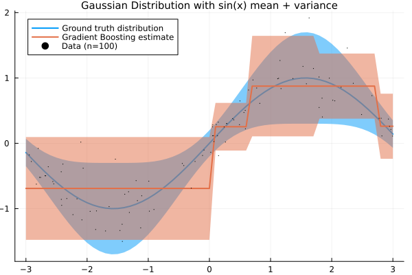
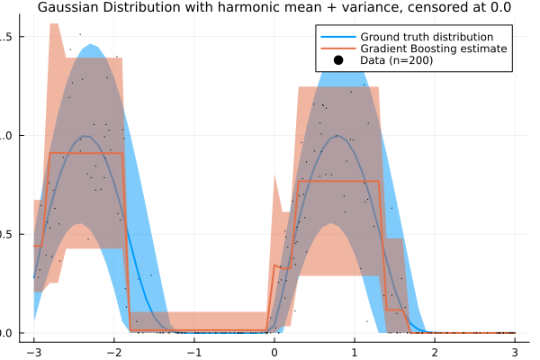
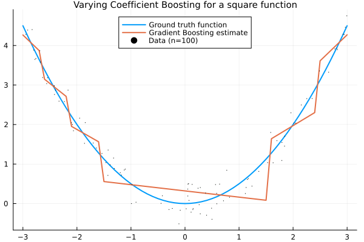

AdvancedBoosting.jl
Experimental package for various Gradient Boosting models.
Some examples
Gaussian conditional distribution
Here, we model the conditional mean and standard deivation as Gradient Boosting models, i.e.
\[p(y|\mathbf{x})=\mathcal{N}(y|f_1(\mathbf{x}),s(f_2(\mathbf{x})))\]
where $f_1,f_2$ are individual Gradient Boosting models and $s$ is the softplus function
\[\text{softplus}(x)=\log\left(\exp(x)+1\right)\]
using AdvancedBoosting, Random, Plots
import Distributions.Normal, Distributions.mean, Distributions.std
Random.seed!(321);
X = rand(100,1) .* 6 .- 3;
y = sin.(X) .+ randn(100,1) .* (0.25 .* abs.(sin.(X)) .+ 0.1);
model = DistributionalBoostingModel(
Normal, #conditional distribution shoud be normal
[RootBoostingModel(1,3), RootBoostingModel(1,3)], #both conditional mean and standard deviation are modelled by GradientBoosting
MultiTransform(
[IdentityTransform([1]), #mean model output stay as is
SoftplusTransform([2]) #stddev model output is mapped to the positive, non-zero reals
])
);
fit!(model, X, y[:])
lines = collect(-3:0.1:3)[:,:];
pred_dists = model(lines);
p1 = plot();
plot!(p1
lines[:], sin.(lines[:]),
ribbon = 2 .* (0.25 .* sin.(lines[:]).^2 .+ 0.1),
label="Ground truth distribution",
title="Gaussian Distribution with sin(x) mean + variance",
titlefontsize=10,
fmt=:png,
lw=2
);
plot!(p1,
lines[:],mean.(pred_dists),
ribbon = 2 .* std.(pred_dists),
label="Gradient Boosting estimate", lw=2
);
scatter!(p1,
X[:],y[:],
markersize = 0.25,
label = "Data (n=100)"
);
Gaussian conditional distribution, censored at $y=0$
Same as above, but now we have the Gaussian distribution censored at y=0, i.e.
\[p(y|\mathbf{x})=\Phi(0|f_1(\mathbf{x}),s(f_2(\mathbf{x})))\cdot\mathbb{I}(y=0) + (1-\Phi(0|f_1(\mathbf{x}),s(f_2(\mathbf{x}))))\cdot\mathcal{N}(y|f_1(\mathbf{x}),s(f_2(\mathbf{x})))\cdot\mathbb{I}(y>0)\]
import Distributions.Normal, Distributions.censored
Random.seed!(321)
X = rand(200,1) .* 6 .- 3
f(x) = censored(Normal(sin( 2 * x), 0.25*abs(sin(x))+0.1), lower=0.0)
y = rand.(f.(X))
#define custom distribution to match our type definition
import Distributions.ContinuousUnivariateDistribution, Distributions.logpdf, Distributions.mean, Distributions.quantile
struct ZeroCensoredNormal <: ContinuousUnivariateDistribution
mu
sigma
end
logpdf(m::ZeroCensoredNormal, y) = logpdf(censored(Normal(m.mu, m.sigma), lower=0.0), y)
mean(m::ZeroCensoredNormal) = mean(censored(Normal(m.mu, m.sigma), lower=0.0))
quantile(m::ZeroCensoredNormal, p) = quantile(censored(Normal(m.mu, m.sigma), lower=0.0),p)
model = DistributionalBoostingModel(
ZeroCensoredNormal,
[RootBoostingModel(1,5),RootBoostingModel(1,5)],
MultiTransform([IdentityTransform([1]), SoftplusTransform([2])])
)
fit!(model, X, y[:])
lines = collect(-3:0.1:3)[:,:]
pred_dists = model(lines)
mean_pred = mean.(pred_dists)
ribbon_pred = (mean_pred .- quantile.(pred_dists,0.05), quantile.(pred_dists,0.95) .- mean_pred)
line_dists = f.(lines)
mean_line = mean.(line_dists)
ribbon_line = (mean_line .- quantile.(line_dists,0.05), quantile.(line_dists,0.95) .- mean_line)
p1 = plot()
plot!(p1,lines[:], mean_line, ribbon = ribbon_line, label="Ground truth distribution", title="Gaussian Distribution with harmonic mean + variance, censored at 0.0",
titlefontsize=10, fmt=:png, lw=2)
plot!(p1, lines[:], mean_pred, ribbon = ribbon_pred, label="Gradient Boosting estimate", lw=2)
scatter!(p1, X[:],y[:], markersize = 0.25, label = "Data (n=200)")
Varying Coefficient Boosting
Model the coefficients of a linear model as gradient boosted, varying coefficients:
\[y=\alpha + f_1(\mathbf{x})\cdot \mathbf{x}_{(1)} + \cdots + f_M(\mathbf{x})\cdot \mathbf{x}_{(M)}\]
where $\mathbf{x}\in\mathbb{R}^M$ and $f_1,...,f_M$ are individual Gradient Boosting models.
using AdvancedBoosting, Random, Plots
import Distributions.Normal, Distributions.mean
Random.seed!(321);
X = rand(100,1) .* 6 .- 3
f(x) = Normal(0.5*x^2, 0.25)
y = rand.(f.(X))
model = VaryingCoefficientBoostingModel(
[RootBoostingModel(1,5)],
VaryingCoefficientTransform()
);
fit!(model, X, y[:])
lines = collect(-3:0.1:3)[:,:];
predictions = model(lines);
p1 = plot();
plot!(p1, lines[:], mean.(f.(lines[:])),
label="Ground truth function",
title="Varying Coefficient Boosting for a square function",
titlefontsize=10,
fmt=:png,
lw=2,
legend=:top);
plot!(p1, lines[:], predictions,
label="Gradient Boosting estimate",
lw=2);
scatter!(p1, X[:], y[:],
markersize=0.25,
label="Data (n=100)");